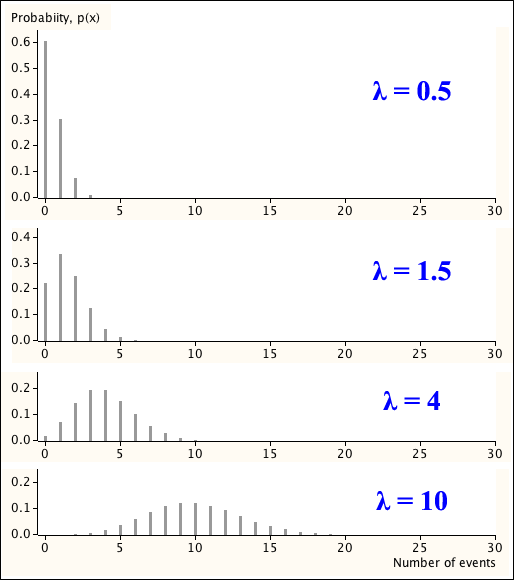

A formal definition of the Poisson distribution is now given.
Definition
A random variable has a Poisson distribution with parameter \(\lambda\)
\[ X \;\; \sim \; \; \PoissonDistn(\lambda) \]if its probability function is
\[ p(x) \;\;=\;\; \frac {\lambda^x e^{-\lambda}} {x!} \quad\quad \text{ for } x=0, 1, \dots \]A Poisson distribution describes the number of events in any period of a Poisson process, not just unit time.
Poisson distribution for number of events
In a Poisson process with rate \(\lambda\) events per unit time, the number of events, \(X\) in a period of time of length \(t\) has a Poisson distribution
\[ X \;\; \sim \; \; \PoissonDistn(\lambda t) \](Proved in full version)
Some properties of Poisson distributions
If events in a Poisson process occur at rate \(\lambda\) per unit time, then the number of events in time \(t_1 + t_2\) is the sum of the events in time \(t_1\) and those in \(t_2\). The events in \(t_1\) and \(t_2\) are independent and all three variables have Poisson distributions.
Adding two independent Poisson variables therefore results in another Poisson variable that also has a Poisson distribution.
Sum of independent Poisson variables
If \(X_1\) and \(X_2\) are independent Poisson random variables with parameters \(\lambda_1\) and \(\lambda_2\), then
\[ X_1 + X_2 \;\; \sim \; \; \PoissonDistn(\lambda_1 + \lambda_2) \]This extends in an obvious way to the sum of any number of independent Poisson random variables.
Normal approximation for large λ
The shape of a Poisson distribution with parameter \(\lambda\) becomes close to a normal distribution as \(\lambda\) increases.
(Proved in full version)
Shape of Poisson distribution
Here are a few examples of Poisson distributions.

Note that